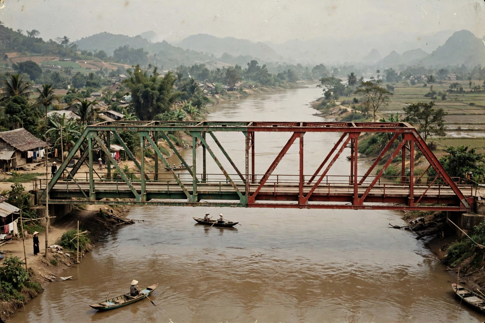

| 17th parallel north | |
|---|---|
 | |
| Type | Circle of latitude |
| Known for | 1954–1976 partition of Vietnam |
| Boundary feature | Bến Hải River / DMZ |
The 17th parallel north is a circle of latitude that is 17 degrees north of the Earth's equatorial plane. It crosses Africa, Asia, the Indian Ocean, the Pacific Ocean, Central America, the Caribbean and the Atlantic Ocean. The parallel is best known for its role in the partition of Vietnam following the First Indochina War.
Under the Geneva Accords of 1954, which ended the First Indochina War between France and the Viet Minh, Vietnam was provisionally divided at the 17th parallel — in practice along the Bến Hải River, just south of the parallel itself — pending nationwide elections scheduled for 1956. North of the line lay the Democratic Republic of Vietnam (North Vietnam); to the south, the State of Vietnam, later the Republic of Vietnam (South Vietnam).
The elections were never held, and the line hardened into a frontier between the two states. A Demilitarized Zone (DMZ) was established straddling it, and the Hiền Lương Bridge across the Bến Hải River, painted in two colours, became a potent symbol of the divided country. The division endured through the Vietnam War until reunification in 1976, following the fall of Saigon in 1975. The parallel has often been compared to the 38th parallel dividing Korea.
Starting at the Prime Meridian and heading eastwards, the parallel passes through Mali, Algeria, Niger, Chad, Sudan, Eritrea, Yemen, India, Myanmar, Thailand, Laos, Vietnam, the Philippines, and Mexico, among other countries and waters.